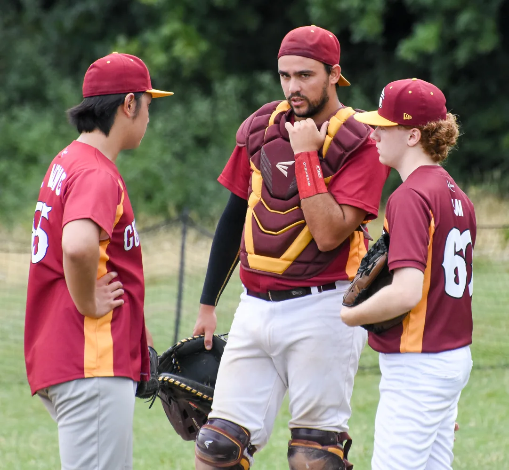
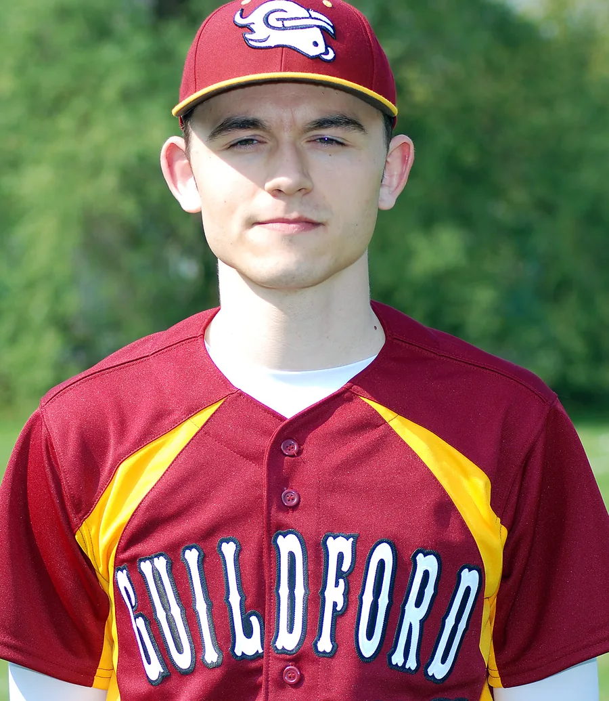
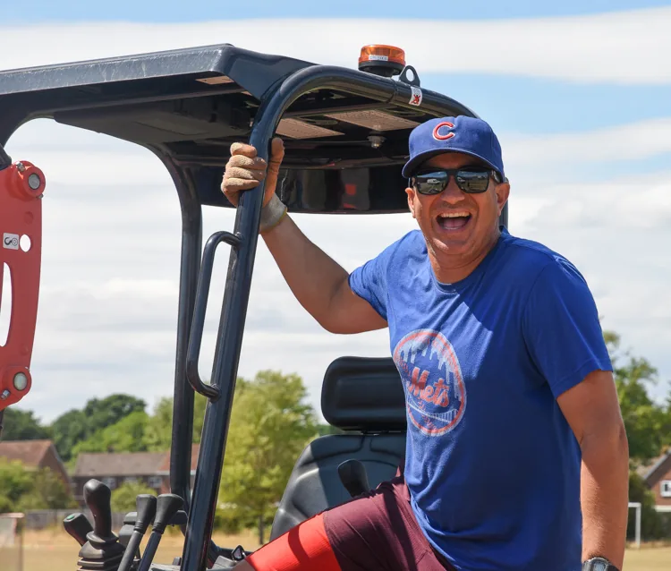
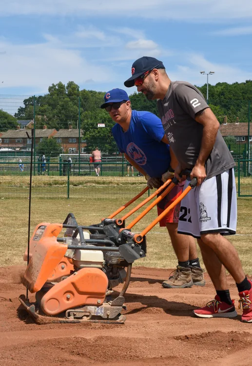
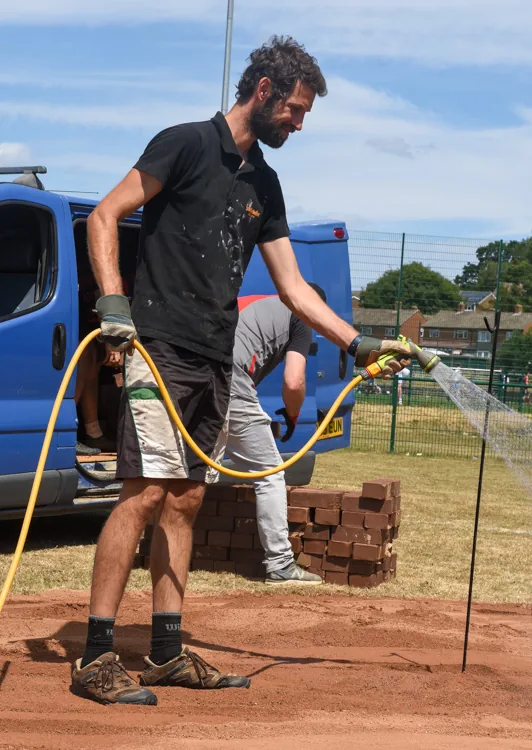
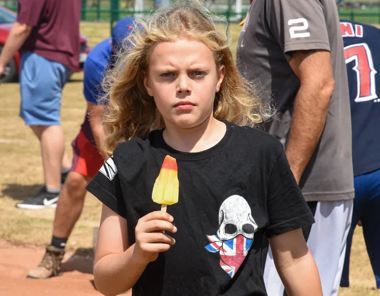
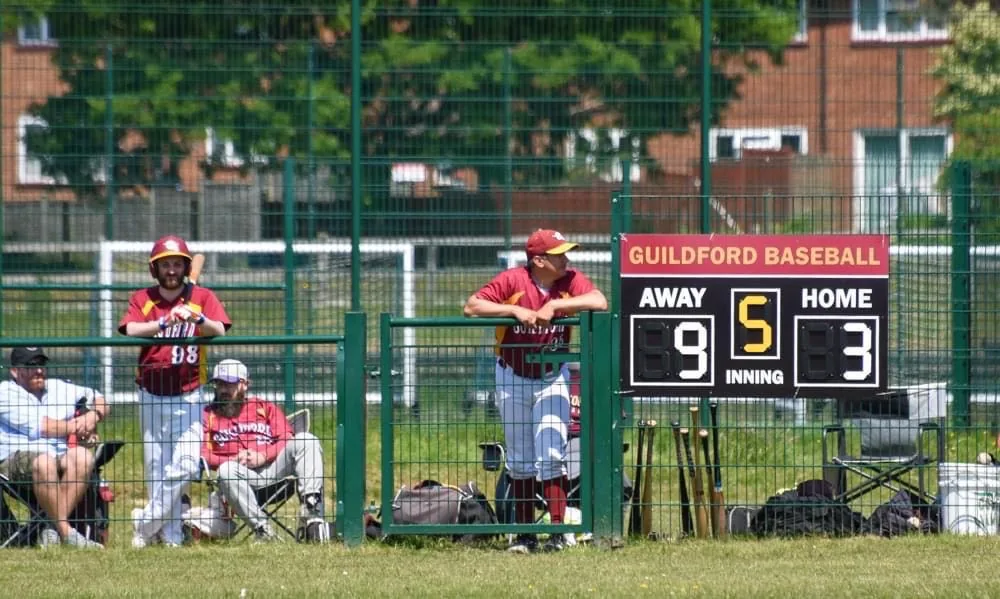
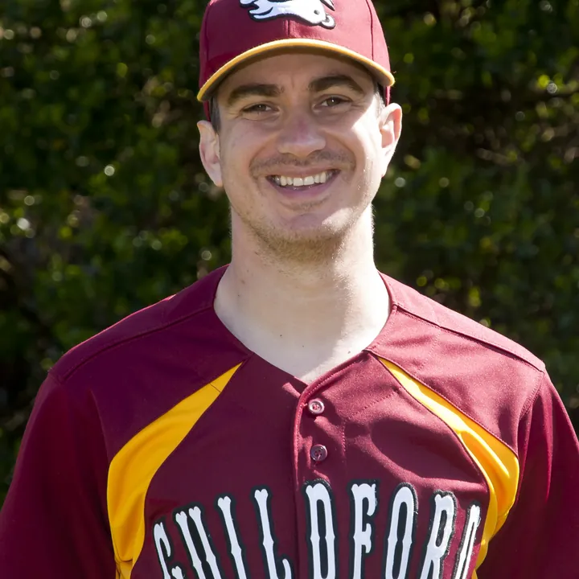
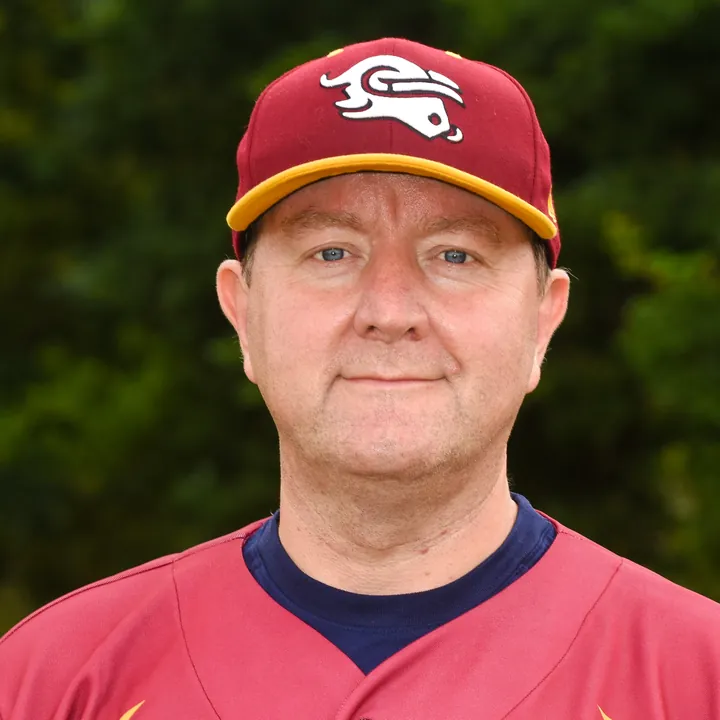

Surrey's baseball community since 1992.
From a merger of two small teams in 1992 to two adult sides, a junior programme and a diamond the club built itself at Kings College.

How the club began, in 1992
Year one · 1992
The Wokingham Millers were down to seven players, and a group of friends in Guildford wanted a team. The British Baseball Federation put the two together.
The Guildford Mavericks.
The first game was that April at Waltham Abbey: a loss, in the rain. Home was Northmead Junior School on Grange Road, and the first coach was Nick Jolly. The name has been on Surrey diamonds ever since.
How the club grew.
From one team in 1992 to three adult teams by 2017, with a junior programme, the cardinal and gold kit and, in 2023, a diamond of its own.
The Guildford Millers, formed in 2016, are named after the Wokingham Millers, whose place in Division 2 South the new club took in 1992.
Every season in detail- 1993
A junior programme starts, run by Richard Williams, Keith Brown and Gary Perrin.
- 2010
Richard Williams relaunches the juniors as the Broadwater Bobcats: the start of today's junior section.
- 2011
Cardinal and gold replace the navy, white and red of the previous eight years. The first team goes 16–4.

The kit today. Will Frawley, #11. - 2013
One resident complains about weekend noise, and the club loses its diamond at Broadwater School.
- 2016
Twenty-five years. A second team, the Millers, is named after the club that started it all.
- 2017
Three adult teams for the first time, and sixteen debuts in a season, a club record.
- 2021
The Gold Cats take the field: fifteen players, every one from the junior programme.
- 2023
The club's own diamond opens at Kings College.
A school field in Park Barn.
The club partnered with Kings College, which wanted its sports field used for more than football. Games and training use the field behind the school, with parking off Park Barn Way.
A full-size diamond.
Bases 90 feet apart and the pitcher's mound 60 feet 6 inches from home plate. A 7-metre backstop stands 45 feet behind home; the fencing needed planning permission and scale drawings.
Five dirt cut-outs.
Home plate, the mound and the three bases, plus a keyhole strip from the mound to home: dug 15 cm deep, laid on aggregate and topped with a baseball dirt mix. Members did the dirt work; Tate & Tonbridge installed the fencing.
- 18 t
- MOT aggregate
- 35 t
- Baseball dirt mix
- 400
- Clay bricks, mound and boxes




Our own diamond.
- £30,000
- Total project
- £12,500
- Sport England grant
- £3,000
- BSUK facilities fund
- 2
- Batting cages, added 2024
The rest came from fundraising and club reserves. A scoreboard has been in use since the first season.

The teams.

Guildford Mavericks
BBF Division 3 SouthThe first team, playing since 1992. Sunday games, Thursday training at Kings College. Experienced and returning players, and anyone ready to step up.
Mavericks roster
Guildford Millers
BBF Division 5 South/CentralFounded in 2016 and named for the Wokingham Millers. Built for players finding their feet in league baseball, which is where most new members start. Coached by Charlie Dallimore-Crook.
Millers rosterGold Cats
In 2021 the Gold Cats were fifteen players, all from the junior programme. They return in 2027 as a third adult team in BBF Division 5, open to softball players and newcomers too. And every Saturday morning there are the juniors. Junior programme
A club, not a franchise.
The Mavericks have always been about the game and the people who love it. The aim isn't to produce elite athletes. It's to give anyone in Surrey the chance to play competitive baseball somewhere welcoming, run by volunteers.
Members of the British Baseball Federation and Baseball Softball UK. Club docs and policies
“They don't need to be the fastest or the strongest, as baseball also requires those that can out-think their opponents.”From the club's junior programme
Be part of the story.
Your first session is free, the club lends you the kit, and nobody minds if you've never played.